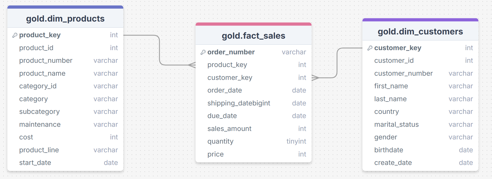

Advanced SQL Analysis on Customers and Products
Topics: Change-Over-Time Trends, Cumulative Analysis, Performance Analysis, Part-to-Whole Proportional, Data Segmentation and Reporting.
📌 Project Overview
This project applies advanced SQL techniques, including complex queries, window functions, CTEs, subqueries, and report generation, to extract insights and address business questions. It focuses on analyzing change-over-time trends, cumulative patterns, performance metrics, part-to-whole proportions, data segmentation, and comprehensive reporting.
🛢️ Database
- gold.dim_products: Stores product details.
- gold.dim_customers: Stores customer details.
- gold.fact_sales: Stores sales transactions.

📈 Change-Over-Time Trends
Goals
- Analyze how a measure evolves over time.
- Help track trends and identify seasonality in your data.
Tasks
- 1. High-level overview of total sales, number of customers, quantity by year.
- 2. Drill down to months.
📊 Cumulative Analysis
Goals
- Aggregate the data progressively over time.
- Help to understand whether our business is growing or declining.
Tasks
- 1. View total sales per month, running total of sales and moving avg of price over time.
📋 Performance Analysis
Goals
- Compare the current value to a target value.
- Help measure success and compare performance.
Tasks
- 1. Analyze the yearly performance of products by comparing each product's sales to both its average sales performance and the previous year's sales.
🔵 Part-to-Whole Proportional
Goals
- Analyze how an individual part is performing compared to the overall.
- Allow us to understand which category has the greatest impact on the business.
Tasks
- 1. Which categories contribute the most to overall sales?
🔍 Data Segmentation
Goals
- Group the data based on a specific range.
- Help understand the correlation b/w two measures.
Tasks
- 1. Segment products into cost ranges and count how many products fall into each segment.
- 2. Group customers into 3 segments based on their spending behavior listed as below, and find the total number of customers by each group.
- VIP: at least 12 months of history and spending more than €5,000
- Regular: at least 12 months of history but spending €5,000 or less
- New: lifespan less than 12 months
📄 Reporting
Goals
- Collect different types of explorations and analysis.
- Help stakeholders to have insights into one object and make great decision-making.
Tasks
- 1. Customer Report
- Purpose: This report consolidates key customer metrics and behaviors.
- Highlights:
- Gathers essential fields such as names, ages, and transaction details.
- Segments customers into categories (VIP, Regular, New) and age groups.
- Aggregates customer-level metrics:
- total orders
- total sales
- total quantity purchased
- total products
- lifespan (in months)
- Calculates valuable KPIs:
- recency (months since last order)
- average order value (AOV)
- average monthly spend
- 2. Product Report
- Purpose: This report consolidates key product metrics and behaviors.
- Highlights:
- Gathers essential fields such as product name, category, subcategory, and cost.
- Segments products by revenue to identify High-Performers, Mid-Range, or Low-Performers.
- Aggregates product-level metrics:
- total orders
- total sales
- total quantity sold
- total customers (unique)
- lifespan (in months)
- Calculates valuable KPIs:
- recency (months since last sale)
- average order revenue (AOR)
- average monthly revenue